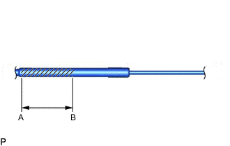

PROCEDURE
DISPOSE OF BACK DOOR STAY ASSEMBLY

Secure the back door stay assembly horizontally in a vise with the piston rod pulled out.
While wearing safety glasses, gradually cut the shaded part between A and B shown in the illustration using a metal saw to gradually release the gas.
| Specification | ||||
|---|---|---|---|---|
|
CAUTION:
Although the gas inside the back door stay assembly is colorless, odorless and harmless, metal debris may scatter. Therefore, cover the back door stay assembly with a piece of cloth or other material.